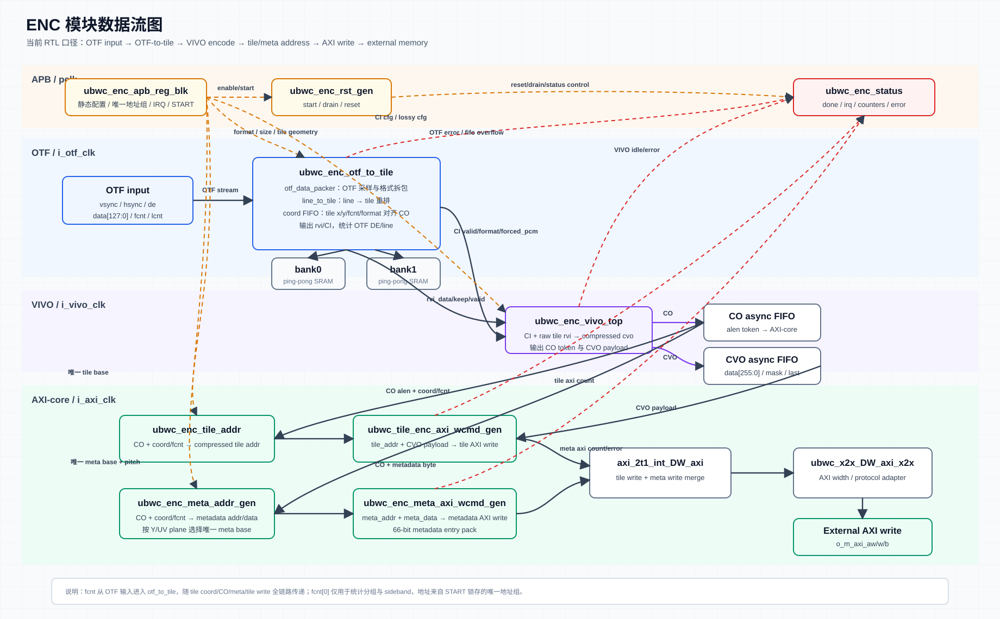
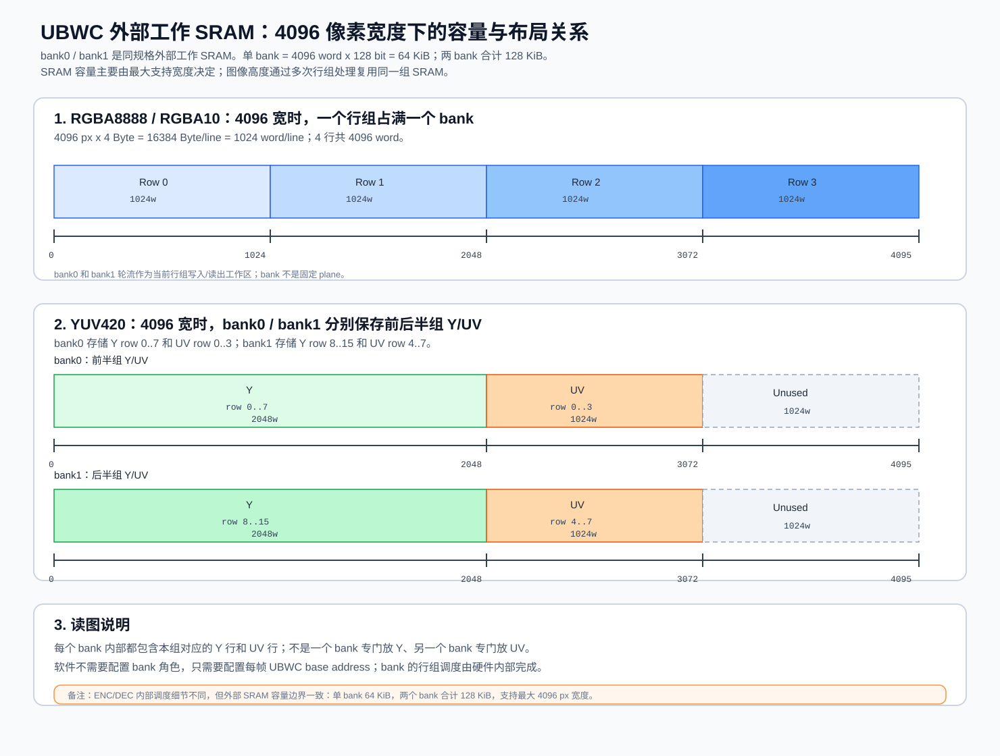
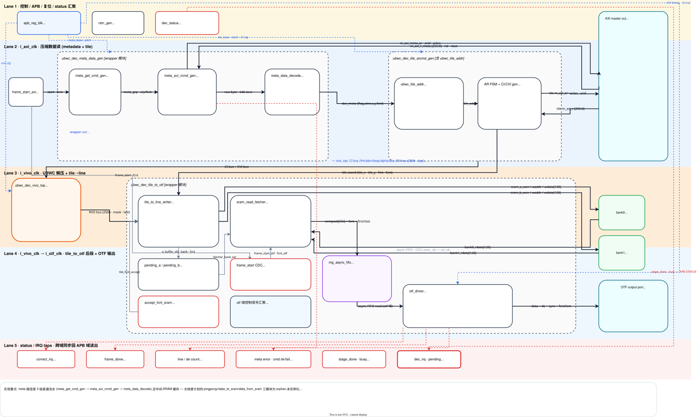

ENC
ENC 1. Feature
| 特性 | 说明 |
|---|
| 功能 | 将 OTF 输入像素流编码为 UBWC compressed tile 数据和 metadata，并通过 AXI write master 写入外部 memory。 |
| 输入接口 | OTF input，包含 vsync/hsync/de/data/fcnt/lcnt/ready。 |
| 输出接口 | AXI write master，分别写 compressed tile 数据和 metadata。 |
| 推荐时钟 | APB/PCLK 100 MHz；AXI/i_axi_clk 500 MHz；Core/i_vivo_clk 200 MHz；OTF/i_otf_clk 320 MHz。 |
| 支持格式 | RGBA8888、RGBA1010102、YUV420_8/NV12、YUV420_10/P010、RGBA8888 lossy 2:1。 |
| 支持像素尺寸 | 当前 SRAM/line-buffer 规格按最大有效宽度 4096 px 设计；1440x3200 属于该宽度范围内。实际配置以 OTF width/height 和 layout 计算结果为准。 |
| SRAM | 当前外部工作 SRAM 为 bank0/bank1 两个同规格 bank，单 bank 64 KiB，两 bank 合计 128 KiB。SRAM 容量主要由最大支持图像宽度决定；图像高度只影响行组处理次数，不增加单 bank 容量；小于或等于 4096 px 宽的 RGBA/YUV420 场景复用同一规格 SRAM。 |
| 连续帧 | 软件每帧写一组 base address 后写 IRQ_CTRL[5]=1 产生 start token；OTF 数据携带 i_otf_fcnt。若使能 IRQ_CTRL[6]，输入 i_otf_vsync 上升沿会触发 ENC soft reset 并在复位释放后重新 arm frame start。 |
| 地址 slot | 两组地址 slot，硬件按 fcnt[0] 选择 slot0/slot1。 |
| 中断 | 正确中断在最后有效输出完成后产生；错误中断用于地址未配置、OTF 行/帧错误、FIFO overflow、VIVO/metadata error。 |
ENC 2. Interface
参数
| 参数 | 默认值 | 说明 |
|---|
SB_WIDTH | 1 | Sideband width |
APB_AW/APB_DW | 16 / 32 | APB byte address/data width |
APB_BLK_NREG | 64 | APB register count |
AXI_AW/AXI_DW/AXI_LENW/外部AXI_IDW | 64 / 64 / 5 / 5 | AXI_LENW 对外为 5 bit，支持最大 32 beat；wrapper 对外 AXI ID 端口默认 5 bit；内部有效 FCNT/ID 语义为低 4 bit。 |
COM_BUF_AW/COM_BUF_DW | 12 / 128 | 外部 SRAM bank address/data width |
Port
| 接口组 | 信号 | 方向 | 位宽 | 说明 |
|---|
| APB | PCLK | input | 1 bit | APB clock |
| APB | PRESETn | input | 1 bit | APB async reset, active low |
| APB | PSEL | input | 1 bit | APB select |
| APB | PENABLE | input | 1 bit | APB enable phase |
| APB | PADDR | input | APB_AW | APB byte address |
| APB | PWRITE | input | 1 bit | APB write/read select |
| APB | PWDATA | input | APB_DW | APB write data |
| APB | PREADY | output | 1 bit | APB ready |
| APB | PSLVERR | output | 1 bit | APB slave error |
| APB | PRDATA | output | APB_DW | APB read data |
| AXI clock/reset | i_axi_clk | input | 1 bit | AXI/control clock |
| AXI clock/reset | i_axi_rstn | input | 1 bit | i_axi_clk domain synchronous reset, active low |
| OTF clock/reset | i_otf_clk | input | 1 bit | OTF input clock |
| OTF clock/reset | i_otf_rstn | input | 1 bit | i_otf_clk domain synchronous reset, active low |
| VIVO clock/reset | i_vivo_clk | input | 1 bit | VIVO clock |
| VIVO clock/reset | i_vivo_rstn | input | 1 bit | i_vivo_clk domain synchronous reset, active low |
| OTF input | i_otf_vsync | input | 1 bit | Input frame sync |
| OTF input | i_otf_hsync | input | 1 bit | Input line sync |
| OTF input | i_otf_de | input | 1 bit | Input data enable |
| OTF input | i_otf_data | input | 128 bit | Input pixel data |
| OTF input | i_otf_fcnt | input | 4 bit | Input frame count |
| OTF input | i_otf_lcnt | input | 12 bit | Input line count |
| OTF input | o_otf_ready | output | 1 bit | ENC 对 OTF 输入的反压 |
| SRAM bank0 | o_bank0_en | output | 1 bit | Bank0 SRAM enable |
| SRAM bank0 | o_bank0_wen | output | 1 bit | Bank0 SRAM write enable |
| SRAM bank0 | o_bank0_addr | output | COM_BUF_AW | Bank0 SRAM address |
| SRAM bank0 | o_bank0_din | output | COM_BUF_DW | Bank0 SRAM write data |
| SRAM bank0 | i_bank0_dout | input | COM_BUF_DW | Bank0 SRAM read data |
| SRAM bank0 | i_bank0_dout_vld | input | 1 bit | Bank0 SRAM read data valid |
| SRAM bank1 | o_bank1_en | output | 1 bit | Bank1 SRAM enable |
| SRAM bank1 | o_bank1_wen | output | 1 bit | Bank1 SRAM write enable |
| SRAM bank1 | o_bank1_addr | output | COM_BUF_AW | Bank1 SRAM address |
| SRAM bank1 | o_bank1_din | output | COM_BUF_DW | Bank1 SRAM write data |
| SRAM bank1 | i_bank1_dout | input | COM_BUF_DW | Bank1 SRAM read data |
| SRAM bank1 | i_bank1_dout_vld | input | 1 bit | Bank1 SRAM read data valid |
| AXI AW | o_m_axi_awid | output | 5 bit | 对外 AXI AW ID；内部有效 FCNT/ID 语义为低 4 bit |
| AXI AW | o_m_axi_awaddr | output | AXI_AW | AXI AW address |
| AXI AW | o_m_axi_awlen | output | AXI_LENW | AXI AW burst length |
| AXI AW | o_m_axi_awsize | output | 3 bit | AXI AW beat size |
| AXI AW | o_m_axi_awburst | output | 2 bit | AXI AW burst type |
| AXI AW | o_m_axi_awlock | output | 2 bit | AXI AW lock |
| AXI AW | o_m_axi_awcache | output | 4 bit | AXI AW cache attribute |
| AXI AW | o_m_axi_awprot | output | 3 bit | AXI AW protection attribute |
| AXI AW | o_m_axi_awvalid | output | 1 bit | AXI AW valid |
| AXI AW | i_m_axi_awready | input | 1 bit | AXI AW ready |
| AXI W | o_m_axi_wdata | output | AXI_DW | AXI W data |
| AXI W | o_m_axi_wstrb | output | AXI_DW/8 | AXI W byte strobe |
| AXI W | o_m_axi_wvalid | output | 1 bit | AXI W valid |
| AXI W | o_m_axi_wlast | output | 1 bit | AXI W last beat |
| AXI W | i_m_axi_wready | input | 1 bit | AXI W ready |
| AXI B | i_m_axi_bid | input | 5 bit | 对外 AXI B ID；低 4 bit 对应内部 FCNT/ID 语义 |
| AXI B | i_m_axi_bresp | input | 2 bit | AXI B response |
| AXI B | i_m_axi_bvalid | input | 1 bit | AXI B valid |
| AXI B | o_m_axi_bready | output | 1 bit | AXI B ready |
| Done/IRQ | o_stage_done | output | 8 bit | Stage done bitmap |
| Done/IRQ | o_frame_done | output | 1 bit | Frame done flag |
| Done/IRQ | o_irq | output | 1 bit | Interrupt output |
ENC 3. Register
ENC Register 总表
| Offset | Register | Access | Reset | Bit | Field | 概要 |
|---|
0x0000 | REG_VERSION | RO | 0x00010000 | [31:0] | version | IP version，上电后读一次确认软件/RTL 兼容性。 |
0x0004 | REG_DATE | RO | 0x20260406 | [31:0] | date | RTL date，上电后读一次。 |
0x0008 | REG_TILE_CFG0 | RW | 0 | [0] | enc_ubwc_en | ENC UBWC enable；格式/尺寸/layout 变化时配置。 |
0x0008 | REG_TILE_CFG0 | RW | 0 | [1] | lvl1_bank_swizzle_en | Level-1 bank swizzle 配置和 AP 配置同步。 |
0x0008 | REG_TILE_CFG0 | RW | 0 | [2] | lvl2_bank_swizzle_en | Level-2 bank swizzle 配置和 AP 配置同步。 |
0x0008 | REG_TILE_CFG0 | RW | 0 | [3] | lvl3_bank_swizzle_en | Level-3 bank swizzle 配置和 AP 配置同步。 |
0x0008 | REG_TILE_CFG0 | RW | 0 | [12:8] | highest_bank_bit | highest bank bit 配置和 AP 配置同步。 |
0x0008 | REG_TILE_CFG0 | RW | 0 | [16] | bank_spread_en | bank spread 配置和 AP 配置同步。 |
0x000c | REG_TILE_CFG1 | RW | 0 | [0] | four_line_format | 不同图像格式配置：RGBA/RGBA10 写 1；YUV420/NV12/P010 写 0。 |
0x000c | REG_TILE_CFG1 | RW | 0 | [1] | is_lossy_rgba_2_1_format | RGBA 2:1 lossy format select。 |
0x000c | REG_TILE_CFG1 | RW | 0 | [26:16] | tile_pitch | Compressed tile pitch，单位为 16 bytes。 |
0x0010 | REG_ENC_CI_CFG0 | RW | 0 | [0] | enc_ci_input_type | CI input type 配置；1=tiled data，0=linear data；寄存器复位值为 0，普通 tiled UBWC 路径软件应配置为 1。 |
0x0010 | REG_ENC_CI_CFG0 | RW | 0 | [10:8] | enc_ci_alen | CI alen 配置；寄存器复位值为 0，普通 VIVO_ENC 配置软件应写 7。 |
0x0014 | REG_ENC_CI_CFG1 | RW | 0 | [16] | enc_ci_lossy | lossy 模式使能。 |
0x0018 | REG_ENC_CI_CFG2 | RW | 0 | [2:0] | cfg0 | VIVO_ENC 模块使用，默认写 0；除非 VIVO_ENC 集成规格明确要求，否则软件保持 0。 |
0x0018 | REG_ENC_CI_CFG2 | RW | 0 | [5:3] | cfg1 | VIVO_ENC 模块使用，默认写 0；除非 VIVO_ENC 集成规格明确要求，否则软件保持 0。 |
0x0018 | REG_ENC_CI_CFG2 | RW | 0 | [9:6] | cfg2 | VIVO_ENC 模块使用，默认写 0；除非 VIVO_ENC 集成规格明确要求，否则软件保持 0。 |
0x0018 | REG_ENC_CI_CFG2 | RW | 0 | [13:10] | cfg3 | VIVO_ENC 模块使用，默认写 0；除非 VIVO_ENC 集成规格明确要求，否则软件保持 0。 |
0x0018 | REG_ENC_CI_CFG2 | RW | 0 | [17:14] | cfg4 | VIVO_ENC 模块使用，默认写 0；除非 VIVO_ENC 集成规格明确要求，否则软件保持 0。 |
0x0018 | REG_ENC_CI_CFG2 | RW | 0 | [21:18] | cfg5 | VIVO_ENC 模块使用，默认写 0；除非 VIVO_ENC 集成规格明确要求，否则软件保持 0。 |
0x0018 | REG_ENC_CI_CFG2 | RW | 0 | [23:22] | cfg6 | VIVO_ENC 模块使用，默认写 0；除非 VIVO_ENC 集成规格明确要求，否则软件保持 0。 |
0x0018 | REG_ENC_CI_CFG2 | RW | 0 | [25:24] | cfg7 | VIVO_ENC 模块使用，默认写 0；除非 VIVO_ENC 集成规格明确要求，否则软件保持 0。 |
0x0018 | REG_ENC_CI_CFG2 | RW | 0 | [27:26] | cfg8 | VIVO_ENC 模块使用，默认写 0；除非 VIVO_ENC 集成规格明确要求，否则软件保持 0。 |
0x0018 | REG_ENC_CI_CFG2 | RW | 0 | [30:28] | cfg9 | VIVO_ENC 模块使用，默认写 0；除非 VIVO_ENC 集成规格明确要求，否则软件保持 0。 |
0x001c | REG_ENC_CI_CFG3 | RW | 0 | [5:0] | cfg10 | VIVO_ENC 模块使用，默认写 0；除非 VIVO_ENC 集成规格明确要求，否则软件保持 0。 |
0x001c | REG_ENC_CI_CFG3 | RW | 0 | [13:8] | cfg11 | VIVO_ENC 模块使用，默认写 0；除非 VIVO_ENC 集成规格明确要求，否则软件保持 0。 |
0x0020 | REG_OTF_CFG0 | RW | 0 | [2:0] | otf_cfg_format | 输入格式：0 RGBA8888，1 RGBA1010102，2 NV12，3 P010。 |
0x0024 | REG_OTF_CFG1 | RW | 0 | [15:0] | otf_cfg_width | 输入 active width。 |
0x0024 | REG_OTF_CFG1 | RW | 0 | [31:16] | otf_cfg_height | 输入 active height。 |
0x0028 | REG_OTF_CFG2 | RW | 0 | [15:0] | otf_cfg_tile_w | Tile width。 |
0x0028 | REG_OTF_CFG2 | RW | 0 | [19:16] | otf_cfg_tile_h | Tile height。 |
0x002c | REG_OTF_CFG3 | RW | 0 | [15:0] | otf_cfg_y_tile_cols | Y/RGBA plane tile column count。 |
0x002c | REG_OTF_CFG3 | RW | 0 | [31:16] | otf_cfg_uv_tile_cols | UV plane tile column count；RGBA 写 0。 |
0x0030 | REG_META_BASE_Y_LO | RW | 0 | [31:0] | meta_y_base_offset_addr[31:0] | Y/RGBA metadata 存储基地址低 32 bit，每帧配置。 |
0x0034 | REG_META_BASE_Y_HI | RW | 0 | [31:0] | meta_y_base_offset_addr[63:32] | Y/RGBA metadata 存储基地址高 32 bit，每帧配置。 |
0x0038 | REG_TILE_BASE_Y_LO | RW | 0 | [31:0] | y_base_offset_addr[31:0] | Y/RGBA compressed tile 存储基地址低 32 bit，每帧配置。 |
0x003c | REG_TILE_BASE_Y_HI | RW | 0 | [31:0] | y_base_offset_addr[63:32] | Y/RGBA compressed tile 存储基地址高 32 bit，每帧配置。 |
0x0040 | REG_META_BASE_UV_LO | RW | 0 | [31:0] | meta_uv_base_offset_addr[31:0] | UV metadata 存储基地址低 32 bit；RGBA 写 0。 |
0x0044 | REG_META_BASE_UV_HI | RW | 0 | [31:0] | meta_uv_base_offset_addr[63:32] | UV metadata 存储基地址高 32 bit；RGBA 写 0。 |
0x0048 | REG_TILE_BASE_UV_LO | RW | 0 | [31:0] | uv_base_offset_addr[31:0] | UV compressed tile 存储基地址低 32 bit；RGBA 写 0。 |
0x004c | REG_TILE_BASE_UV_HI | RW | 0 | [31:0] | uv_base_offset_addr[63:32] | UV compressed tile 存储基地址高 32 bit；地址组写完后仍需写 start。 |
0x0050 | REG_META_ACTIVE_SIZE | RW | 0 | [15:0] | meta_active_width_px | Metadata 有效图像宽度。 |
0x0050 | REG_META_ACTIVE_SIZE | RW | 0 | [31:16] | meta_active_height_px | Metadata 有效图像高度。 |
0x0054 | REG_META_PITCH | RW | 0 | [31:0] | meta_data_plane_pitch | Metadata plane pitch。 |
0x0058 | REG_STATUS0 | RO | dynamic | [0] | enc_idle | ENC idle。 |
0x0058 | REG_STATUS0 | RO | dynamic | [1] | enc_error | ENC error。 |
0x0058 | REG_STATUS0 | RO | dynamic | [2] | otf_to_tile_busy | OTF-to-tile busy。 |
0x0058 | REG_STATUS0 | RO | dynamic | [3] | otf_to_tile_overflow | OTF-to-tile overflow。 |
0x0058 | REG_STATUS0 | RO | dynamic | [4] | otf_err_bline | OTF bad line。 |
0x0058 | REG_STATUS0 | RO | dynamic | [5] | otf_err_bframe | OTF bad frame。 |
0x0058 | REG_STATUS0 | RO | dynamic | [6] | meta_err_0 | Metadata co-buffer overflow。 |
0x0058 | REG_STATUS0 | RO | dynamic | [7] | meta_err_1 | Metadata tile order error。 |
0x0058 | REG_STATUS0 | RO | dynamic | [8] | frame_done | Frame done。 |
0x0058 | REG_STATUS0 | RO | dynamic | [9] | addr_cfg_invalid | 当前 slot 地址未配置错误 sticky 状态；ENC 数据链路按当前帧 fcnt[0] 选择 slot0 或 slot1 的地址配置。当硬件检查当前 slot 地址有效性时，如果被选中的地址 FIFO 为空，则 active_addr_cfg_valid 为 0，该 bit 置 1 并保持，同时参与 error IRQ。该状态表示当前帧没有可用的 META/TILE 基地址，软件必须先补齐对应 slot 的每帧地址组，确认 buffer 队列与 fcnt[0] 对齐后，再写 REG_IRQ_CTRL[1] irq_clear 清 sticky 状态；关闭 enc_ubwc_en 或硬复位也会清零。 |
0x0058 | REG_STATUS0 | RO | dynamic | [10] | addr_cfg_valid0 | Address slot0 valid。 |
0x0058 | REG_STATUS0 | RO | dynamic | [11] | addr_cfg_valid1 | Address slot1 valid。 |
0x0058 | REG_STATUS0 | RO | dynamic | [12] | addr_cfg_overflow | 地址配置 FIFO overflow sticky 状态；ENC 每帧地址由 META Y、TILE Y、META UV、TILE UV 四个 64-bit 基地址组成，软件写 REG_TILE_BASE_UV_HI 作为一次地址组 commit。APB block 会按 slot0/slot1 轮流把地址组写入对应地址 FIFO，每个 slot FIFO 深度为 4。当 commit 时选中的 slot FIFO 已满，当前地址组不会 push 进 FIFO，该 bit 置 1 并保持，同时参与 error IRQ。软件应停止继续提交地址，等待已有帧消耗地址 FIFO；若已发生 overflow，应写 REG_IRQ_CTRL[1] irq_clear 清 sticky 状态，并确认软件 buffer 队列与硬件地址队列重新对齐，必要时关闭 enc_ubwc_en 后重新配置。 |
0x0058 | REG_STATUS0 | RO | dynamic | [13] | rst_drain_timeout | 软复位等待 AXI drain 超时 sticky 状态；ENC 进入 soft reset 前会停止发起新的 AXI 写事务，并等待 tile/meta AXI 写通路 outstanding 清空。如果等待超过 16'hffff 个 i_axi_clk 周期仍未进入 idle，则该 bit 置 1 并保持；软件写 REG_IRQ_CTRL[1] irq_clear 或硬复位后清零。 |
0x005c | REG_STATUS1 | RO | dynamic | [7:0] | stage_done | ENC stage done bitmap。 |
0x0060 | REG_IRQ_CTRL | RW | 0 | [0] | irq_enable | 中断使能；寄存器复位值为 0，需要中断输出时软件应配置为 1。 |
0x0060 | REG_IRQ_CTRL | W1P | 0 | [1] | irq_clear | 写 1 清 pending/status sticky。 |
0x0060 | REG_IRQ_CTRL | RO | dynamic | [2] | irq_pending | Any IRQ pending。 |
0x0060 | REG_IRQ_CTRL | RO | dynamic | [3] | irq_correct_pending | Correct IRQ pending。 |
0x0060 | REG_IRQ_CTRL | RO | dynamic | [4] | irq_error_pending | Error IRQ pending。 |
0x0060 | REG_IRQ_CTRL | W1P | 0 | [5] | start | 写 1 产生 frame start token。 |
0x0060 | REG_IRQ_CTRL | RW | 0 | [6] | vsync_reset_en | 置 1 后，ENC 输入 i_otf_vsync 上升沿通过 AXI-drain reset sequencer 触发整条 ENC 链路 soft reset，并在复位释放后重新 arm frame start。 |
0x0064 | REG_STATUS2 | RO | dynamic | [0] | irq_status_any | Any IRQ mirror。 |
0x0064 | REG_STATUS2 | RO | dynamic | [1] | irq_status_correct | Correct IRQ mirror。 |
0x0064 | REG_STATUS2 | RO | dynamic | [2] | irq_status_error | Error IRQ mirror。 |
0x0068 | REG_META_COUNT0 | RO | dynamic | [31:0] | meta_count0 | slot0 metadata 统计计数。 |
0x006c | REG_META_COUNT1 | RO | dynamic | [31:0] | meta_count1 | slot1 metadata 统计计数。 |
0x0070 | REG_TILEADDR_COUNT0 | RO | dynamic | [31:0] | tileaddr_count0 | slot0 tile address 统计计数。 |
0x0074 | REG_TILEADDR_COUNT1 | RO | dynamic | [31:0] | tileaddr_count1 | slot1 tile address 统计计数。 |
0x0078 | REG_OTF_TILE_COUNT0 | RO | dynamic | [31:0] | otf_tile_count0 | slot0 OTF-to-tile tile 统计计数。 |
0x007c | REG_OTF_TILE_COUNT1 | RO | dynamic | [31:0] | otf_tile_count1 | slot1 OTF-to-tile tile 统计计数。 |
0x0080 | REG_OTF_DE_COUNT0 | RO | dynamic | [31:0] | otf_de_count0 | slot0 de && ready 统计计数。 |
0x0084 | REG_OTF_DE_COUNT1 | RO | dynamic | [31:0] | otf_de_count1 | slot1 de && ready 统计计数。 |
0x0088 | REG_OTF_LINE_COUNT0 | RO | dynamic | [31:0] | otf_line_count0 | slot0 OTF line 统计计数。 |
0x008c | REG_OTF_LINE_COUNT1 | RO | dynamic | [31:0] | otf_line_count1 | slot1 OTF line 统计计数。 |
0x0090 | REG_TILE_AXI_W_CNT0 | RO | dynamic | [31:0] | tile_axi_w_cnt0 | slot0 tile AXI W 统计计数。 |
0x0094 | REG_TILE_AXI_W_CNT1 | RO | dynamic | [31:0] | tile_axi_w_cnt1 | slot1 tile AXI W 统计计数。 |
0x0098 | REG_META_AXI_W_CNT0 | RO | dynamic | [31:0] | meta_axi_w_cnt0 | slot0 metadata AXI W 统计计数。 |
0x009c | REG_META_AXI_W_CNT1 | RO | dynamic | [31:0] | meta_axi_w_cnt1 | slot1 metadata AXI W 统计计数。 |
APB 寄存器 32 bit，byte offset 4 byte 对齐；64 bit base address 先写 low，再写 high；W1P 字段写 1 产生 pulse。
ENC Register 逐项说明
3.1 Version
寄存器：REG_VERSION；地址：0x0000
| Bit | Field | Access | Reset | 说明 |
|---|
[31:0] | version | RO | 0x00010000 | IP version。 |
计算说明：只读识别寄存器，无软件计算；上电后读取一次用于版本匹配。
3.2 Date
寄存器：REG_DATE；地址：0x0004
| Bit | Field | Access | Reset | 说明 |
|---|
[31:0] | date | RO | 0x20260406 | RTL date。 |
计算说明：只读识别寄存器，无软件计算；用于定位当前 RTL 交付版本。
3.3 Tile CFG0
寄存器：REG_TILE_CFG0；地址：0x0008
| Bit | Field | Access | Reset | 说明 |
|---|
[0] | enc_ubwc_en | RW | 0 | ENC UBWC enable。 |
[1] | lvl1_bank_swizzle_en | RW | 0 | Level-1 bank swizzle 配置和 AP 配置同步。 |
[2] | lvl2_bank_swizzle_en | RW | 0 | Level-2 bank swizzle 配置和 AP 配置同步。 |
[3] | lvl3_bank_swizzle_en | RW | 0 | Level-3 bank swizzle 配置和 AP 配置同步。 |
[12:8] | highest_bank_bit | RW | 0 | highest bank bit 配置和 AP 配置同步。 |
[16] | bank_spread_en | RW | 0 | bank spread 配置和 AP 配置同步。 |
计算说明：这些字段来自系统 memory layout/bank swizzle 策略，不随每帧地址变化；图像格式、尺寸或 layout 策略变化时重新配置。
3.4 Tile CFG1
寄存器：REG_TILE_CFG1；地址：0x000c
| Bit | Field | Access | Reset | 说明 |
|---|
[0] | four_line_format | RW | 0 | 不同图像格式配置：RGBA/RGBA10 写 1；YUV420/NV12/P010 写 0。 |
[1] | is_lossy_rgba_2_1_format | RW | 0 | RGBA 2:1 lossy format select。 |
[26:16] | tile_pitch | RW | 0 | Compressed tile pitch，单位为 16 bytes。 |
计算说明：tile_pitch = tile_pitch_bytes / 16。tile_pitch_bytes 由格式和有效宽度对齐得到：RGBA 按 4 bytes/pixel 计算，NV12/P010 按 plane pitch 计算，并按 UBWC layout 要求对齐。
3.5 ENC CI CFG0
寄存器：REG_ENC_CI_CFG0；地址：0x0010
| Bit | Field | Access | Reset | 说明 |
|---|
[0] | enc_ci_input_type | RW | 0 | CI input type 配置；1=tiled data，0=linear data；寄存器复位值为 0，普通 tiled UBWC 路径软件应配置为 1。 |
[10:8] | enc_ci_alen | RW | 0 | CI alen 配置；寄存器复位值为 0，普通 VIVO_ENC 配置软件应写 7。 |
计算说明：REG_ENC_CI_CFG0 复位值为 0x0000_0000；普通 tiled UBWC 场景软件应写 input_type=1、alen=7。
3.6 ENC CI CFG1
寄存器：REG_ENC_CI_CFG1；地址：0x0014
| Bit | Field | Access | Reset | 说明 |
|---|
[16] | enc_ci_lossy | RW | 0 | lossy 模式使能。 |
计算说明：与压缩策略一致；lossless 场景写 0，启用对应 lossy 策略时写 1。
3.7 ENC CI CFG2
寄存器：REG_ENC_CI_CFG2；地址：0x0018
| Bit | Field | Access | Reset | 说明 |
|---|
[2:0] | cfg0 | RW | 0 | UBWC CI configuration。 |
[5:3] | cfg1 | RW | 0 | UBWC CI configuration。 |
[9:6] | cfg2 | RW | 0 | UBWC CI configuration。 |
[13:10] | cfg3 | RW | 0 | UBWC CI configuration。 |
[17:14] | cfg4 | RW | 0 | UBWC CI configuration。 |
[21:18] | cfg5 | RW | 0 | UBWC CI configuration。 |
[23:22] | cfg6 | RW | 0 | UBWC CI configuration。 |
[25:24] | cfg7 | RW | 0 | UBWC CI configuration。 |
[27:26] | cfg8 | RW | 0 | UBWC CI configuration。 |
[30:28] | cfg9 | RW | 0 | UBWC CI configuration。 |
计算说明：当前软件模板写 0；若后续 CI 算法参数开放，应由压缩策略表生成。
3.8 ENC CI CFG3
寄存器：REG_ENC_CI_CFG3；地址：0x001c
| Bit | Field | Access | Reset | 说明 |
|---|
[5:0] | cfg10 | RW | 0 | UBWC CI configuration。 |
[13:8] | cfg11 | RW | 0 | UBWC CI configuration。 |
计算说明：当前软件模板写 0；若后续 CI 算法参数开放，应由压缩策略表生成。
3.9 OTF CFG0
寄存器：REG_OTF_CFG0；地址：0x0020
| Bit | Field | Access | Reset | 说明 |
|---|
[2:0] | otf_cfg_format | RW | 0 | 0 RGBA8888，1 RGBA1010102，2 NV12/YUV420_8，3 P010/YUV420_10。 |
计算说明：由输入像素格式直接映射；格式变化时，tile size、pitch、metadata 尺寸和地址 layout 必须同步重算。
3.10 OTF CFG1
寄存器：REG_OTF_CFG1；地址：0x0024
| Bit | Field | Access | Reset | 说明 |
|---|
[15:0] | otf_cfg_width | RW | 0 | 输入 active width。 |
[31:16] | otf_cfg_height | RW | 0 | 输入 active height。 |
计算说明：写入原始有效像素尺寸；内部 layout 需要的 padded/stored size 由后续 tile、pitch、metadata 配置描述。
3.11 OTF CFG2
寄存器：REG_OTF_CFG2；地址：0x0028
| Bit | Field | Access | Reset | 说明 |
|---|
[15:0] | otf_cfg_tile_w | RW | 0 | Tile width。 |
[19:16] | otf_cfg_tile_h | RW | 0 | Tile height。 |
计算说明：RGBA8888/RGBA1010102 使用 16x4，NV12 使用 32x8，P010 使用 32x4。这些值随格式变化配置。
3.12 OTF CFG3
寄存器：REG_OTF_CFG3；地址：0x002c
| Bit | Field | Access | Reset | 说明 |
|---|
[15:0] | otf_cfg_y_tile_cols | RW | 0 | Y/RGBA plane tile column count。 |
[31:16] | otf_cfg_uv_tile_cols | RW | 0 | UV plane tile column count；RGBA 写 0。 |
计算说明：y_tile_cols = ceil(y_plane_width / tile_w)，uv_tile_cols = ceil(uv_plane_width / tile_w)；RGBA 没有 UV plane，uv_tile_cols=0。
3.13 Meta/Tile Base 地址组
寄存器范围：0x0030 到 0x004c；每帧或每个输出 buffer 配置一次。
| Register | Address | Bit | Field | Access | Reset | 说明 |
|---|
REG_META_BASE_Y_LO | 0x0030 | [31:0] | meta_y_base_offset_addr[31:0] | RW | 0 | Y/RGBA metadata 存储基地址低 32 bit。 |
REG_META_BASE_Y_HI | 0x0034 | [31:0] | meta_y_base_offset_addr[63:32] | RW | 0 | Y/RGBA metadata 存储基地址高 32 bit。 |
REG_TILE_BASE_Y_LO | 0x0038 | [31:0] | y_base_offset_addr[31:0] | RW | 0 | Y/RGBA compressed tile 存储基地址低 32 bit。 |
REG_TILE_BASE_Y_HI | 0x003c | [31:0] | y_base_offset_addr[63:32] | RW | 0 | Y/RGBA compressed tile 存储基地址高 32 bit。 |
REG_META_BASE_UV_LO | 0x0040 | [31:0] | meta_uv_base_offset_addr[31:0] | RW | 0 | UV metadata 存储基地址低 32 bit；RGBA 写 0。 |
REG_META_BASE_UV_HI | 0x0044 | [31:0] | meta_uv_base_offset_addr[63:32] | RW | 0 | UV metadata 存储基地址高 32 bit；RGBA 写 0。 |
REG_TILE_BASE_UV_LO | 0x0048 | [31:0] | uv_base_offset_addr[31:0] | RW | 0 | UV compressed tile 存储基地址低 32 bit；RGBA 写 0。 |
REG_TILE_BASE_UV_HI | 0x004c | [31:0] | uv_base_offset_addr[63:32] | RW | 0 | UV compressed tile 存储基地址高 32 bit；RGBA 写 0。 |
地址 layout 计算公式：
align(x, a) = round_up(x, a)
y_tile_cols = ceil(y_plane_width / tile_w)
y_tile_rows = ceil(y_plane_height / tile_h)
uv_tile_cols = has_uv ? ceil(uv_plane_width / tile_w) : 0
uv_tile_rows = has_uv ? ceil(uv_plane_height / tile_h) : 0
meta_y_pitch = align(y_tile_cols, 64)
meta_y_size = align(meta_y_pitch * align(y_tile_rows, 16), 4096)
tile_y_size = align(tile_y_pitch_bytes * stored_y_height, 4096)
meta_uv_pitch = has_uv ? align(uv_tile_cols, 64) : 0
meta_uv_size = has_uv ? align(meta_uv_pitch * align(uv_tile_rows, 16), 4096) : 0
tile_uv_size = has_uv ? align(tile_uv_pitch_bytes * stored_uv_height, 4096) : 0
meta_y_base = frame_base
tile_y_base = meta_y_base + meta_y_size
meta_uv_base = has_uv ? tile_y_base + tile_y_size : 0
tile_uv_base = has_uv ? meta_uv_base + meta_uv_size : 0
REG_META_BASE_Y_LO = meta_y_base[31:0]
REG_META_BASE_Y_HI = meta_y_base[63:32]
REG_TILE_BASE_Y_LO = tile_y_base[31:0]
REG_TILE_BASE_Y_HI = tile_y_base[63:32]
REG_META_BASE_UV_LO = meta_uv_base[31:0]
REG_META_BASE_UV_HI = meta_uv_base[63:32]
REG_TILE_BASE_UV_LO = tile_uv_base[31:0]
REG_TILE_BASE_UV_HI = tile_uv_base[63:32]
说明：tile_y_pitch_bytes、tile_uv_pitch_bytes、stored_y_height、stored_uv_height 由格式、pitch 和 UBWC layout 对齐规则计算，必须和 REG_TILE_CFG1、REG_META_ACTIVE_SIZE、REG_META_PITCH 保持一致。地址组写完后，软件仍需写 REG_IRQ_CTRL[5]=1 产生 frame start token。
3.14 Meta Active Size
寄存器：REG_META_ACTIVE_SIZE；地址：0x0050
| Bit | Field | Access | Reset | 说明 |
|---|
[15:0] | meta_active_width_px | RW | 0 | UBWC metadata 覆盖的有效图像宽度。 |
[31:16] | meta_active_height_px | RW | 0 | UBWC metadata 覆盖的有效图像高度。 |
计算说明：
REG_OTF_CFG1 描述 OTF 输入流的 active width/height，也就是硬件在 OTF 接口上接收的图像/画布尺寸。
REG_META_ACTIVE_SIZE 描述 UBWC metadata 和边界 tile 需要覆盖的有效图像区域。当前 RTL 中该寄存器非 0 时作为 active_width_px/active_height_px 使用；若配置为 0，则回退使用 REG_OTF_CFG1 的 width/height。
通常没有 padding/crop 时，两者配置一致。例如 544x1200 RGBA8888：
REG_OTF_CFG1.width = 544
REG_OTF_CFG1.height = 1200
REG_META_ACTIVE_SIZE.width = 544
REG_META_ACTIVE_SIZE.height= 1200
只有当 OTF 输入画布尺寸和真实有效压缩区域不一致时才分开配置。例如 OTF 实际输入 544x1216，但只有 544x1200 是有效图像：
REG_OTF_CFG1.height = 1216
REG_META_ACTIVE_SIZE.height= 1200
这种配置表示 OTF 接口按 1216 行接收数据，但 UBWC metadata、有效 tile 覆盖和右/下边界处理按 1200 行有效图像生成。
3.15 Meta Pitch
寄存器：REG_META_PITCH；地址：0x0054
| Bit | Field | Access | Reset | 说明 |
|---|
[31:0] | meta_data_plane_pitch | RW | 0 | Metadata plane pitch，单位 byte。 |
计算说明：meta_data_plane_pitch = align(y_tile_cols, 64)，即按 tile columns 生成 metadata 行 pitch 并 64-byte 对齐。
3.16 Status0
寄存器：REG_STATUS0；地址：0x0058
| Bit | Field | Access | Reset | 说明 |
|---|
[0] | enc_idle | RO | dynamic | ENC idle。 |
[1] | enc_error | RO | dynamic | ENC error。 |
[2] | otf_to_tile_busy | RO | dynamic | OTF-to-tile busy。 |
[3] | otf_to_tile_overflow | RO | dynamic | OTF-to-tile overflow。 |
[4] | otf_err_bline | RO | dynamic | OTF bad line。 |
[5] | otf_err_bframe | RO | dynamic | OTF bad frame。 |
[6] | meta_err_0 | RO | dynamic | Metadata co-buffer overflow。 |
[7] | meta_err_1 | RO | dynamic | Metadata tile order error。 |
[8] | frame_done | RO | dynamic | Frame done。 |
[9] | addr_cfg_invalid | RO | dynamic | 当前 slot 地址未配置错误 sticky 状态；ENC 数据链路按当前帧 fcnt[0] 选择 slot0 或 slot1 的地址配置。当硬件检查当前 slot 地址有效性时，如果被选中的地址 FIFO 为空，则 active_addr_cfg_valid 为 0，该 bit 置 1 并保持，同时参与 error IRQ。该状态表示当前帧没有可用的 META/TILE 基地址，软件必须先补齐对应 slot 的每帧地址组，确认 buffer 队列与 fcnt[0] 对齐后，再写 REG_IRQ_CTRL[1] irq_clear 清 sticky 状态；关闭 enc_ubwc_en 或硬复位也会清零。 |
[10] | addr_cfg_valid0 | RO | dynamic | Address slot0 valid。 |
[11] | addr_cfg_valid1 | RO | dynamic | Address slot1 valid。 |
[12] | addr_cfg_overflow | RO | dynamic | 地址配置 FIFO overflow sticky 状态；ENC 每帧地址由 META Y、TILE Y、META UV、TILE UV 四个 64-bit 基地址组成，软件写 REG_TILE_BASE_UV_HI 作为一次地址组 commit。APB block 会按 slot0/slot1 轮流把地址组写入对应地址 FIFO，每个 slot FIFO 深度为 4。当 commit 时选中的 slot FIFO 已满，当前地址组不会 push 进 FIFO，该 bit 置 1 并保持，同时参与 error IRQ。软件应停止继续提交地址，等待已有帧消耗地址 FIFO；若已发生 overflow，应写 REG_IRQ_CTRL[1] irq_clear 清 sticky 状态，并确认软件 buffer 队列与硬件地址队列重新对齐，必要时关闭 enc_ubwc_en 后重新配置。 |
[13] | rst_drain_timeout | RO | dynamic | 软复位等待 AXI drain 超时 sticky 状态；ENC 进入 soft reset 前会停止发起新的 AXI 写事务，并等待 tile/meta AXI 写通路 outstanding 清空。如果等待超过 16'hffff 个 i_axi_clk 周期仍未进入 idle，则该 bit 置 1 并保持；软件写 REG_IRQ_CTRL[1] irq_clear 或硬复位后清零。 |
计算说明：只读状态由硬件实时或 sticky 产生；软件无需计算，可用于判断地址配置、中断来源、OTF 输入异常和软复位 drain 是否异常。addr_cfg_invalid=1 表示当前要处理的帧已经到达，但 fcnt[0] 对应 slot 没有可用地址配置；软件应补齐地址组并确认帧号/slot 与 buffer 队列没有错位。addr_cfg_overflow=1 表示软件提交地址组的速度超过硬件消耗地址组的速度，至少有一次地址组 commit 被拒绝进入 FIFO；软件需要重新确认 buffer 队列和硬件地址队列的对应关系。rst_drain_timeout=1 表示本次软复位没有正常等到 AXI 写通路排空，复位 sequencer 已按超时路径继续进入 reset hold；软件应检查外部 AXI slave/interconnect 是否长时间不返回 ready/response，或是否在复位窗口仍有上游数据持续触发写请求。
3.17 Status1
寄存器：REG_STATUS1；地址：0x005c
| Bit | Field | Access | Reset | 说明 |
|---|
[7:0] | stage_done | RO | dynamic | ENC stage done bitmap。 |
计算说明：硬件根据真实 stage done 事件锁存；软件只读，不参与 done 推导。
3.18 IRQ Control
寄存器：REG_IRQ_CTRL；地址：0x0060
| Bit | Field | Access | Reset | 说明 |
|---|
[0] | irq_enable | RW | 0 | 中断使能；寄存器复位值为 0，需要中断输出时软件应配置为 1。 |
[1] | irq_clear | W1P | 0 | 写 1 清 pending/status sticky。 |
[2] | irq_pending | RO | dynamic | Any IRQ pending。 |
[3] | irq_correct_pending | RO | dynamic | Correct IRQ pending。 |
[4] | irq_error_pending | RO | dynamic | Error IRQ pending。 |
[5] | start | W1P | 0 | 写 1 产生 frame start token。 |
[6] | vsync_reset_en | RW | 0 | 置 1 后，输入 i_otf_vsync 上升沿触发 ENC soft reset；复位前会等待 AXI write drain，复位释放后重新 arm frame start。 |
计算说明：每帧地址配置完成后写 REG_IRQ_CTRL[5]=1 启动；中断处理完成后写 REG_IRQ_CTRL[1]=1 清除。REG_IRQ_CTRL[6] 是可选自动复位模式，适合希望每个输入 VSYNC 重新初始化 ENC 内部流水的系统；软件必须在 VSYNC 到来前保证本帧地址 slot 已配置。
3.19 Status2
寄存器：REG_STATUS2；地址：0x0064
| Bit | Field | Access | Reset | 说明 |
|---|
[0] | irq_status_any | RO | dynamic | Any IRQ。 |
[1] | irq_status_correct | RO | dynamic | Correct IRQ。 |
[2] | irq_status_error | RO | dynamic | Error IRQ。 |
计算说明：IRQ mirror 由硬件锁存；软件用于区分正常完成和错误中断。
3.20 Meta Count0
寄存器：REG_META_COUNT0；地址：0x0068
| Bit | Field | Access | Reset | 说明 |
|---|
[31:0] | meta_count0 | RO | dynamic | Slot0 metadata count。 |
计算说明：硬件统计计数，只用于 debug 和吞吐量核对。
3.21 Meta Count1
寄存器：REG_META_COUNT1；地址：0x006c
| Bit | Field | Access | Reset | 说明 |
|---|
[31:0] | meta_count1 | RO | dynamic | Slot1 metadata count。 |
计算说明：硬件统计计数，只用于 debug 和吞吐量核对。
3.22 Tile Address Count0
寄存器：REG_TILEADDR_COUNT0；地址：0x0070
| Bit | Field | Access | Reset | 说明 |
|---|
[31:0] | tileaddr_count0 | RO | dynamic | Slot0 tile address count。 |
计算说明：硬件统计计数，只用于 debug，不作为 frame done 判断依据。
3.23 Tile Address Count1
寄存器：REG_TILEADDR_COUNT1；地址：0x0074
| Bit | Field | Access | Reset | 说明 |
|---|
[31:0] | tileaddr_count1 | RO | dynamic | Slot1 tile address count。 |
计算说明：硬件统计计数，只用于 debug，不作为 frame done 判断依据。
3.24 OTF Tile Count0
寄存器：REG_OTF_TILE_COUNT0；地址：0x0078
| Bit | Field | Access | Reset | 说明 |
|---|
[31:0] | otf_tile_count0 | RO | dynamic | Slot0 OTF-to-tile tile count。 |
计算说明：硬件统计计数，只用于 debug。
3.25 OTF Tile Count1
寄存器：REG_OTF_TILE_COUNT1；地址：0x007c
| Bit | Field | Access | Reset | 说明 |
|---|
[31:0] | otf_tile_count1 | RO | dynamic | Slot1 OTF-to-tile tile count。 |
计算说明：硬件统计计数，只用于 debug。
3.26 OTF DE Count0
寄存器：REG_OTF_DE_COUNT0；地址：0x0080
| Bit | Field | Access | Reset | 说明 |
|---|
[31:0] | otf_de_count0 | RO | dynamic | Slot0 i_otf_de && o_otf_ready count。 |
计算说明：硬件统计 OTF 有效输入 beat，只用于 debug。
3.27 OTF DE Count1
寄存器：REG_OTF_DE_COUNT1；地址：0x0084
| Bit | Field | Access | Reset | 说明 |
|---|
[31:0] | otf_de_count1 | RO | dynamic | Slot1 i_otf_de && o_otf_ready count。 |
计算说明：硬件统计 OTF 有效输入 beat，只用于 debug。
3.28 OTF Line Count0
寄存器：REG_OTF_LINE_COUNT0；地址：0x0088
| Bit | Field | Access | Reset | 说明 |
|---|
[31:0] | otf_line_count0 | RO | dynamic | Slot0 OTF line count。 |
计算说明：硬件统计 OTF line，只用于 debug。
3.29 OTF Line Count1
寄存器：REG_OTF_LINE_COUNT1；地址：0x008c
| Bit | Field | Access | Reset | 说明 |
|---|
[31:0] | otf_line_count1 | RO | dynamic | Slot1 OTF line count。 |
计算说明：硬件统计 OTF line，只用于 debug。
3.30 Tile AXI W Count0
寄存器：REG_TILE_AXI_W_CNT0；地址：0x0090
| Bit | Field | Access | Reset | 说明 |
|---|
[31:0] | tile_axi_w_cnt0 | RO | dynamic | Slot0 tile AXI W beat count。 |
计算说明：硬件统计 tile AXI W beat，只用于 debug。
3.31 Tile AXI W Count1
寄存器：REG_TILE_AXI_W_CNT1；地址：0x0094
| Bit | Field | Access | Reset | 说明 |
|---|
[31:0] | tile_axi_w_cnt1 | RO | dynamic | Slot1 tile AXI W beat count。 |
计算说明：硬件统计 tile AXI W beat，只用于 debug。
3.32 Meta AXI W Count0
寄存器：REG_META_AXI_W_CNT0；地址：0x0098
| Bit | Field | Access | Reset | 说明 |
|---|
[31:0] | meta_axi_w_cnt0 | RO | dynamic | Slot0 metadata AXI W beat count。 |
计算说明：硬件统计 metadata AXI W beat，只用于 debug。
3.33 Meta AXI W Count1
寄存器：REG_META_AXI_W_CNT1；地址：0x009c
| Bit | Field | Access | Reset | 说明 |
|---|
[31:0] | meta_axi_w_cnt1 | RO | dynamic | Slot1 metadata AXI W beat count。 |
计算说明：硬件统计 metadata AXI W beat，只用于 debug。
ENC 4. Diagram

ENC 模块数据流图。

4096 px 最大宽度下 bank0/bank1 容量边界和 YUV420 调度关系；每个 bank 包含 Y 区、UV_A 区和 UV_B 区，UV tile 读出按 tile 粒度配对读取两个 bank，UV 写入在 UV_A/UV_B 间交替推进。
| SRAM 项目 | 规格 |
|---|
| bank 数量 | 2 个外部 SRAM bank，bank0/bank1 |
| 单 bank 容量 | 4096 words x 16 bytes = 64 KiB |
| 使用方式 | ping-pong 工作 buffer；bank 不是固定 Y/UV plane |
| SRAM 与图像大小关系 | 容量主要随最大支持宽度变化；高度通过多次行组处理复用同一 bank，不要求随图像高度线性增加。 |
ENC 5. Work Mode
1. 读取 REG_VERSION / REG_DATE。
2. 图像格式、尺寸或 layout 变化时，配置 TILE_CFG、CI_CFG、OTF_CFG、META_ACTIVE_SIZE、META_PITCH。
3. 每个输出 buffer 到来时，写 META_Y、TILE_Y、META_UV、TILE_UV 四个 64-bit base address。
4. 写 REG_IRQ_CTRL[5]=1 产生 start token；如果需要 VSYNC 自动复位模式，可在初始化时置 REG_IRQ_CTRL[6]=1。
5. 上游按 i_otf_fcnt 输入 OTF frame；在 REG_IRQ_CTRL[6]=1 时，i_otf_vsync 上升沿会先触发 soft reset，再由 reset sequencer 重新 arm frame start。
6. 硬件按 fcnt[0] 选择地址 slot，并写出 compressed tile 和 metadata。
7. 软件读 STATUS/COUNT 处理状态，写 REG_IRQ_CTRL[1]=1 清中断。
ENC 6. Debug
| 现象 | 建议读取 | 判断方向 |
|---|
| 没有中断 | REG_IRQ_CTRL[2]，REG_STATUS0[8] | 判断 IRQ pending 和 frame_done 是否产生 |
| 立即报错 | REG_STATUS0[9]，REG_STATUS0[10:13] | 检查当前 fcnt[0] 对应地址 slot 是否有效、地址 FIFO 是否溢出、软复位 drain 是否超时 |
| OTF 输入异常 | REG_STATUS0[4:5]，REG_OTF_DE_COUNT0/1，REG_OTF_LINE_COUNT0/1 | 检查输入行像素数和帧行数 |
| AXI 写异常 | REG_TILE_AXI_W_CNT0/1，REG_META_AXI_W_CNT0/1 | 区分 tile 数据与 metadata 写路径 |
ENC 7. PPA
PPA 章节先保留分类框架，详细评估内容后续按 Power、Performance、Area 三个方向补充。
| PPA 方向 | 内容 |
|---|
| Power | |
| Performance | |
| Area | |
DEC
DEC 1. Feature
| 特性 | 说明 |
|---|
| 功能 | 从外部 memory 读取 UBWC metadata 和 compressed tile 数据，经过 VIVO 解压后输出 OTF 视频流。 |
| 输入接口 | AXI read master 读取 UBWC buffer。 |
| 输出接口 | OTF output，包含 vsync/hsync/de/data/fcnt/lcnt/ready。 |
| 推荐时钟 | APB/PCLK 100 MHz；AXI/i_axi_clk 500 MHz；Core/i_vivo_clk 200 MHz；OTF/i_otf_clk 320 MHz。 |
| 支持格式 | RGBA8888、RGBA1010102、YUV420_8/NV12、YUV420_10/P010、RGBA8888 lossy 2:1。 |
| 支持像素尺寸 | 当前 SRAM/line-buffer 规格按最大有效宽度 4096 px 设计；1440x3200 属于该宽度范围内。实际输出以 OTF timing、metadata tile 数和 layout 配置为准。 |
| SRAM | 当前外部工作 SRAM 为 bank0/bank1 两个同规格 bank，单 bank 64 KiB，两 bank 合计 128 KiB。SRAM 容量主要由最大支持图像宽度决定；图像高度只影响行组处理次数，不增加单 bank 容量；小于或等于 4096 px 宽的 RGBA/YUV420 场景复用同一规格 SRAM。 |
| 连续帧 | 软件每帧写一组 input UBWC base address 后写 IRQ_CTRL[5]=1。 |
| 地址 slot | 两组地址 slot，start 后递增/锁存 frame count，按 fcnt[0] 选择 slot。 |
| VIVO 状态 | STATUS2[0] 为 1 bit vivo_idle；STATUS3[6:0] 为 7 bit vivo_error bitmap。 |
| 中断 | 正确中断在最后有效输出数据完成后产生；错误中断用于 AXI/VIVO/OTF/地址异常。 |
DEC 2. Interface
参数
| 参数 | 默认值 | 说明 |
|---|
APB_AW/APB_DW | 16 / 32 | APB byte address/data width |
AXI_AW/AXI_DW/外部AXI_IDW/AXI_LENW | 64 / 64 / 5 / 5 | AXI_LENW 对外为 5 bit，支持最大 32 beat；wrapper 对外 AXI ID 端口默认 5 bit；内部有效 FCNT/ID 语义为低 4 bit。 |
SB_WIDTH | 1 | Sideband width |
COM_BUF_AW/COM_BUF_DW | 12 / 128 | 外部 SRAM bank address/data width |
FORCE_FULL_PAYLOAD | 0 | 验证/兼容配置 |
Port
| 接口组 | 信号 | 方向 | 位宽 | 说明 |
|---|
| APB | PCLK | input | 1 bit | APB clock |
| APB | PRESETn | input | 1 bit | APB async reset, active low |
| APB | PSEL | input | 1 bit | APB select |
| APB | PENABLE | input | 1 bit | APB enable phase |
| APB | PADDR | input | APB_AW | APB byte address |
| APB | PWRITE | input | 1 bit | APB write/read select |
| APB | PWDATA | input | APB_DW | APB write data |
| APB | PREADY | output | 1 bit | APB ready |
| APB | PSLVERR | output | 1 bit | APB slave error |
| APB | PRDATA | output | APB_DW | APB read data |
| OTF clock/reset | i_otf_clk | input | 1 bit | OTF output clock |
| OTF clock/reset | i_otf_rstn | input | 1 bit | i_otf_clk domain synchronous reset, active low |
| VIVO clock/reset | i_vivo_clk | input | 1 bit | VIVO clock |
| VIVO clock/reset | i_vivo_rstn | input | 1 bit | i_vivo_clk domain synchronous reset, active low |
| OTF output | o_otf_vsync | output | 1 bit | Output frame sync |
| OTF output | o_otf_hsync | output | 1 bit | Output line sync |
| OTF output | o_otf_de | output | 1 bit | Output data enable |
| OTF output | o_otf_data | output | 128 bit | Output pixel data |
| OTF output | o_otf_fcnt | output | 4 bit | Output frame count |
| OTF output | o_otf_lcnt | output | 12 bit | Output line count |
| OTF output | i_otf_ready | input | 1 bit | Downstream OTF ready |
| SRAM bank0 | o_bank0_en | output | 1 bit | Bank0 SRAM enable |
| SRAM bank0 | o_bank0_wen | output | 1 bit | Bank0 SRAM write enable |
| SRAM bank0 | o_bank0_addr | output | COM_BUF_AW | Bank0 SRAM address |
| SRAM bank0 | o_bank0_din | output | COM_BUF_DW | Bank0 SRAM write data |
| SRAM bank0 | i_bank0_dout | input | COM_BUF_DW | Bank0 SRAM read data |
| SRAM bank0 | i_bank0_dout_vld | input | 1 bit | Bank0 SRAM read data valid |
| SRAM bank1 | o_bank1_en | output | 1 bit | Bank1 SRAM enable |
| SRAM bank1 | o_bank1_wen | output | 1 bit | Bank1 SRAM write enable |
| SRAM bank1 | o_bank1_addr | output | COM_BUF_AW | Bank1 SRAM address |
| SRAM bank1 | o_bank1_din | output | COM_BUF_DW | Bank1 SRAM write data |
| SRAM bank1 | i_bank1_dout | input | COM_BUF_DW | Bank1 SRAM read data |
| SRAM bank1 | i_bank1_dout_vld | input | 1 bit | Bank1 SRAM read data valid |
| AXI clock/reset | i_axi_clk | input | 1 bit | AXI read master clock |
| AXI clock/reset | i_axi_rstn | input | 1 bit | i_axi_clk domain synchronous reset, active low |
| AXI AR | o_m_axi_arid | output | 5 bit | 对外 AXI AR ID；内部有效 FCNT/ID 语义为低 4 bit |
| AXI AR | o_m_axi_araddr | output | AXI_AW | AXI AR address |
| AXI AR | o_m_axi_arlen | output | AXI_LENW | AXI AR burst length |
| AXI AR | o_m_axi_arsize | output | 4 bit | AXI AR beat size |
| AXI AR | o_m_axi_arburst | output | 2 bit | AXI AR burst type |
| AXI AR | o_m_axi_arlock | output | 1 bit | AXI AR lock |
| AXI AR | o_m_axi_arcache | output | 4 bit | AXI AR cache attribute |
| AXI AR | o_m_axi_arprot | output | 3 bit | AXI AR protection attribute |
| AXI AR | o_m_axi_arvalid | output | 1 bit | AXI AR valid |
| AXI AR | i_m_axi_arready | input | 1 bit | AXI AR ready |
| AXI R | i_m_axi_rid | input | 5 bit | 对外 AXI R ID；低 4 bit 对应内部 FCNT/ID 语义 |
| AXI R | i_m_axi_rdata | input | AXI_DW | AXI R data |
| AXI R | i_m_axi_rvalid | input | 1 bit | AXI R valid |
| AXI R | i_m_axi_rresp | input | 2 bit | AXI R response |
| AXI R | i_m_axi_rlast | input | 1 bit | AXI R last beat |
| AXI R | o_m_axi_rready | output | 1 bit | AXI R ready |
| Done/IRQ | o_stage_done | output | 5 bit | Stage done bitmap |
| Done/IRQ | o_frame_done | output | 1 bit | Frame done flag |
| Done/IRQ | o_irq | output | 1 bit | Interrupt output |
DEC 3. Register
DEC Register 总表
| Offset | Register | Access | Reset | Bit | Field | 概要 |
|---|
0x0000 | REG_VERSION | RO | 0x00010000 | [31:0] | version | IP version，上电后读一次。 |
0x0004 | REG_DATE | RO | 0x20260403 | [31:0] | date | RTL date，上电后读一次。 |
0x0008 | APB_ADDR_TILE_CFG0 | RW | 0 | [0] | lvl1_bank_swizzle_en | Level-1 bank swizzle 配置和 AP 配置同步。 |
0x0008 | APB_ADDR_TILE_CFG0 | RW | 0 | [1] | lvl2_bank_swizzle_en | Level-2 bank swizzle 配置和 AP 配置同步。 |
0x0008 | APB_ADDR_TILE_CFG0 | RW | 0 | [2] | lvl3_bank_swizzle_en | Level-3 bank swizzle 配置和 AP 配置同步。 |
0x0008 | APB_ADDR_TILE_CFG0 | RW | 0 | [8:4] | highest_bank_bit | highest bank bit 配置和 AP 配置同步。 |
0x0008 | APB_ADDR_TILE_CFG0 | RW | 0 | [9] | bank_spread_en | bank spread 配置和 AP 配置同步。 |
0x0008 | APB_ADDR_TILE_CFG0 | RW | 0 | [10] | four_line_format | 不同图像格式配置：RGBA/RGBA10 写 1；YUV420/NV12/P010 写 0。 |
0x0008 | APB_ADDR_TILE_CFG0 | RW | 0 | [11] | is_lossy_rgba_2_1_format | RGBA 2:1 lossy format select。 |
0x000c | APB_ADDR_TILE_CFG1 | RW | 0 | [11:0] | tile_cfg_pitch | tile pitch，单位为 16 bytes。 |
0x0010 | APB_ADDR_TILE_CFG2 | RW | 0 | [0] | ci_input_type | CI input type 配置；1=tiled data，0=linear data；寄存器复位值为 0，普通 tiled UBWC 路径软件应配置为 1。 |
0x0010 | APB_ADDR_TILE_CFG2 | RW | 0 | [8] | ci_lossy | lossy 模式使能。 |
0x0010 | APB_ADDR_TILE_CFG2 | RW | 0 | [10:9] | ci_alpha_mode | CI alpha mode。 |
0x0014 | APB_ADDR_VIVO_CFG | RW | 0 | [0] | vivo_ubwc_en | VIVO UBWC path 使能；寄存器复位值为 0，启动 decode 前软件应配置为 1。 |
0x0014 | APB_ADDR_VIVO_CFG | RW | 0 | [1] | vivo_sreset | VIVO soft reset。 |
0x0018 | APB_ADDR_OTF_CFG0 | RW | 0 | [15:0] | otf_cfg_img_width | 输出 active width。 |
0x0018 | APB_ADDR_OTF_CFG0 | RW | 0 | [20:16] | otf_cfg_format | 输出 OTF format。 |
0x001c | APB_ADDR_OTF_CFG1 | RW | 0 | [15:0] | otf_cfg_h_total | OTF horizontal total。 |
0x001c | APB_ADDR_OTF_CFG1 | RW | 0 | [31:16] | otf_cfg_h_sync | OTF horizontal sync width。 |
0x0020 | APB_ADDR_OTF_CFG2 | RW | 0 | [15:0] | otf_cfg_h_bp | OTF horizontal back porch。 |
0x0020 | APB_ADDR_OTF_CFG2 | RW | 0 | [31:16] | otf_cfg_h_act | OTF horizontal active width。 |
0x0024 | APB_ADDR_OTF_CFG3 | RW | 0 | [15:0] | otf_cfg_v_total | OTF vertical total。 |
0x0024 | APB_ADDR_OTF_CFG3 | RW | 0 | [31:16] | otf_cfg_v_sync | OTF vertical sync width。 |
0x0028 | APB_ADDR_OTF_CFG4 | RW | 0 | [15:0] | otf_cfg_v_bp | OTF vertical back porch。 |
0x0028 | APB_ADDR_OTF_CFG4 | RW | 0 | [31:16] | otf_cfg_v_act | OTF vertical active height。 |
0x002c | APB_ADDR_META_CFG0 | RW | 0 | [15:0] | meta_tile_x_numbers | Y/RGBA metadata tile columns。 |
0x002c | APB_ADDR_META_CFG0 | RW | 0 | [31:16] | meta_tile_y_numbers | Y/RGBA metadata tile rows。 |
0x0030 | REG_META_BASE_Y_LO | RW | 0 | [31:0] | meta_base_addr_rgba_y[31:0] | RGBA/Y metadata 读取基地址低 32 bit，每帧配置。 |
0x0034 | REG_META_BASE_Y_HI | RW | 0 | [31:0] | meta_base_addr_rgba_y[63:32] | RGBA/Y metadata 读取基地址高 32 bit，每帧配置。 |
0x0038 | REG_TILE_BASE_Y_LO | RW | 0 | [31:0] | tile_base_addr_rgba_y[31:0] | RGBA/Y compressed tile 读取基地址低 32 bit，每帧配置。 |
0x003c | REG_TILE_BASE_Y_HI | RW | 0 | [31:0] | tile_base_addr_rgba_y[63:32] | RGBA/Y compressed tile 读取基地址高 32 bit，每帧配置。 |
0x0040 | REG_META_BASE_UV_LO | RW | 0 | [31:0] | meta_base_addr_uv[31:0] | UV metadata 读取基地址低 32 bit；RGBA 不使用。 |
0x0044 | REG_META_BASE_UV_HI | RW | 0 | [31:0] | meta_base_addr_uv[63:32] | UV metadata 读取基地址高 32 bit；RGBA 不使用。 |
0x0048 | REG_TILE_BASE_UV_LO | RW | 0 | [31:0] | tile_base_addr_uv[31:0] | UV compressed tile 读取基地址低 32 bit；RGBA 不使用。 |
0x004c | REG_TILE_BASE_UV_HI | RW | 0 | [31:0] | tile_base_addr_uv[63:32] | UV compressed tile 读取基地址高 32 bit；RGBA 不使用。 |
0x0050 | APB_ADDR_STATUS0 | RO | dynamic | [0] | frame_active | 当前帧 active。 |
0x0050 | APB_ADDR_STATUS0 | RO | dynamic | [1] | meta_busy | Metadata read stage busy。 |
0x0050 | APB_ADDR_STATUS0 | RO | dynamic | [2] | tile_busy | Tile read stage busy。 |
0x0050 | APB_ADDR_STATUS0 | RO | dynamic | [3] | vivo_busy | VIVO busy。 |
0x0050 | APB_ADDR_STATUS0 | RO | dynamic | [4] | otf_busy | OTF output busy。 |
0x0050 | APB_ADDR_STATUS0 | RO | dynamic | [5] | all_stage_idle | All stage idle。 |
0x0050 | APB_ADDR_STATUS0 | RO | dynamic | [6] | frame_idle_done | Frame idle done。 |
0x0054 | APB_ADDR_STATUS1 | RO | dynamic | [4:0] | stage_done | DEC stage done bitmap。 |
0x0054 | APB_ADDR_STATUS1 | RO | dynamic | [8:5] | stage_seen | Stage entered busy bitmap。 |
0x0058 | APB_ADDR_STATUS2 | RO | dynamic | [0] | vivo_idle | VIVO idle 状态。 |
0x005c | APB_ADDR_STATUS3 | RO | dynamic | [6:0] | vivo_error | VIVO error bitmap。 |
0x0060 | APB_ADDR_IRQ_CTRL | RW | 0 | [0] | irq_enable | 中断使能；寄存器复位值为 0，需要中断输出时软件应配置为 1。 |
0x0060 | APB_ADDR_IRQ_CTRL | W1P | 0 | [1] | irq_clear | 写 1 清 pending/status sticky。 |
0x0060 | APB_ADDR_IRQ_CTRL | RO | dynamic | [2] | irq_pending | Any IRQ pending。 |
0x0060 | APB_ADDR_IRQ_CTRL | RO | dynamic | [3] | irq_error_pending | Error IRQ pending。 |
0x0060 | APB_ADDR_IRQ_CTRL | RO | dynamic | [4] | irq_correct_pending | Correct IRQ pending。 |
0x0060 | APB_ADDR_IRQ_CTRL | W1P | 0 | [5] | start | 写 1 产生 frame start token。 |
0x0064 | APB_ADDR_STATUS4 | RO | dynamic | [0] | irq_status_any | Any IRQ mirror。 |
0x0064 | APB_ADDR_STATUS4 | RO | dynamic | [1] | irq_status_error | Error IRQ mirror。 |
0x0064 | APB_ADDR_STATUS4 | RO | dynamic | [2] | irq_status_correct | Correct IRQ mirror。 |
0x0068 | APB_ADDR_STAT_META | RO | dynamic | [31:0] | stat_meta_tile_cnt | metadata valid tile count。 |
0x006c | APB_ADDR_STAT_TILE | RO | dynamic | [31:0] | stat_tile_addr_cnt | tile address generator valid tile count。 |
0x0070 | APB_ADDR_STAT_OTF_TILE | RO | dynamic | [31:0] | stat_otf_tile_cnt | tile-to-OTF accepted tile count。 |
0x0074 | APB_ADDR_STAT_OTF_LINE | RO | dynamic | [31:0] | stat_otf_line_cnt | OTF output line count。 |
0x0078 | APB_ADDR_STAT_OTF_DE | RO | dynamic | [31:0] | stat_otf_de_cnt | OTF output de && ready beat count。 |
APB 访问规则与 ENC 一致：32 bit 寄存器、4 byte 对齐、64 bit 地址先 low 后 high；W1P 写 1 产生 pulse。
DEC 分立寄存器字段说明与计算过程
0x0000 REG_VERSION
| Bit | Field | Access | Reset | 说明 |
|---|
[31:0] | version | RO | 0x00010000 | IP version。 |
计算说明：只读识别寄存器，无软件计算；上电后读取一次用于版本匹配。
0x0004 REG_DATE
| Bit | Field | Access | Reset | 说明 |
|---|
[31:0] | date | RO | 0x20260403 | RTL date。 |
计算说明：只读识别寄存器，无软件计算；用于定位当前 RTL 交付版本。
0x0008 APB_ADDR_TILE_CFG0
| Bit | Field | Access | Reset | 说明 |
|---|
[0] | lvl1_bank_swizzle_en | RW | 0 | Level-1 bank swizzle 配置和 AP 配置同步。 |
[1] | lvl2_bank_swizzle_en | RW | 0 | Level-2 bank swizzle 配置和 AP 配置同步。 |
[2] | lvl3_bank_swizzle_en | RW | 0 | Level-3 bank swizzle 配置和 AP 配置同步。 |
[8:4] | highest_bank_bit | RW | 0 | highest bank bit 配置和 AP 配置同步。 |
[9] | bank_spread_en | RW | 0 | bank spread 配置和 AP 配置同步。 |
[10] | four_line_format | RW | 0 | 不同图像格式配置：RGBA/RGBA10 写 1；YUV420/NV12/P010 写 0。 |
[11] | is_lossy_rgba_2_1_format | RW | 0 | RGBA 2:1 lossy format select。 |
计算说明：bank/swizzle 字段来自系统 memory layout 策略；four_line_format 和 lossy 字段来自图像格式/压缩策略。格式、尺寸或 layout 变化时重新配置。
0x000c APB_ADDR_TILE_CFG1
| Bit | Field | Access | Reset | 说明 |
|---|
[11:0] | tile_cfg_pitch | RW | 0 | Compressed tile pitch，单位为 16 bytes。 |
计算说明：tile_cfg_pitch = tile_pitch_bytes / 16。tile_pitch_bytes 由读取的 compressed tile plane pitch 按 UBWC layout 对齐得到。
0x0010 APB_ADDR_TILE_CFG2
| Bit | Field | Access | Reset | 说明 |
|---|
[0] | ci_input_type | RW | 0 | CI input type 配置；1=tiled data，0=linear data；寄存器复位值为 0，普通 tiled UBWC 路径软件应配置为 1。 |
[8] | ci_lossy | RW | 0 | lossy 模式使能。 |
[10:9] | ci_alpha_mode | RW | 0 | CI alpha mode。 |
计算说明：APB_ADDR_TILE_CFG2[0] 复位值为 0；普通 tiled UBWC 场景软件应写 1，其他字段按格式/压缩策略配置。
0x0014 APB_ADDR_VIVO_CFG
| Bit | Field | Access | Reset | 说明 |
|---|
[0] | vivo_ubwc_en | RW | 0 | VIVO UBWC path 使能；寄存器复位值为 0，启动 decode 前软件应配置为 1。 |
[1] | vivo_sreset | RW | 0 | VIVO soft reset。 |
计算说明：上电后或 VIVO reset 策略变化时配置；正常连续帧模式下不需要每帧改写。
0x0018 APB_ADDR_OTF_CFG0
| Bit | Field | Access | Reset | 说明 |
|---|
[15:0] | otf_cfg_img_width | RW | 0 | Output active width。 |
[20:16] | otf_cfg_format | RW | 0 | Output OTF format。 |
计算说明：otf_cfg_img_width 通常等于 h_act；format 与输出像素格式一致。
0x001c APB_ADDR_OTF_CFG1
| Bit | Field | Access | Reset | 说明 |
|---|
[15:0] | otf_cfg_h_total | RW | 0 | Horizontal total。 |
[31:16] | otf_cfg_h_sync | RW | 0 | Horizontal sync width。 |
计算说明：h_total = h_sync + h_bp + h_act + h_fp；h_sync 对应 OTF 图中的 HSA。
0x0020 APB_ADDR_OTF_CFG2
| Bit | Field | Access | Reset | 说明 |
|---|
[15:0] | otf_cfg_h_bp | RW | 0 | Horizontal back porch。 |
[31:16] | otf_cfg_h_act | RW | 0 | Horizontal active width。 |
计算说明：h_bp 对应 HBP，h_act 对应 HACT；h_fp = h_total - h_sync - h_bp - h_act。
0x0024 APB_ADDR_OTF_CFG3
| Bit | Field | Access | Reset | 说明 |
|---|
[15:0] | otf_cfg_v_total | RW | 0 | Vertical total。 |
[31:16] | otf_cfg_v_sync | RW | 0 | Vertical sync width。 |
计算说明：v_total = v_sync + v_bp + v_act + v_fp；v_sync 对应 OTF 图中的 VSA。
0x0028 APB_ADDR_OTF_CFG4
| Bit | Field | Access | Reset | 说明 |
|---|
[15:0] | otf_cfg_v_bp | RW | 0 | Vertical back porch。 |
[31:16] | otf_cfg_v_act | RW | 0 | Vertical active height。 |
计算说明：v_bp 对应 VBP，v_act 对应 VACT；v_fp = v_total - v_sync - v_bp - v_act。
0x002c APB_ADDR_META_CFG0
| Bit | Field | Access | Reset | 说明 |
|---|
[15:0] | meta_tile_x_numbers | RW | 0 | Y/RGBA metadata tile columns。 |
[31:16] | meta_tile_y_numbers | RW | 0 | Y/RGBA metadata tile rows。 |
计算说明：meta_tile_x_numbers = ceil(y_plane_width / tile_w)，meta_tile_y_numbers = ceil(y_plane_height / tile_h)；YUV420 的 UV tile 数由格式内部根据 Y 参数推导。
0x0030..0x004c Meta/Tile Base 地址组
| Register | Address | Bit | Field | Access | Reset | 说明 |
|---|
REG_META_BASE_Y_LO | 0x0030 | [31:0] | meta_base_addr_rgba_y[31:0] | RW | 0 | RGBA/Y metadata 读取基地址低 32 bit。 |
REG_META_BASE_Y_HI | 0x0034 | [31:0] | meta_base_addr_rgba_y[63:32] | RW | 0 | RGBA/Y metadata 读取基地址高 32 bit。 |
REG_TILE_BASE_Y_LO | 0x0038 | [31:0] | tile_base_addr_rgba_y[31:0] | RW | 0 | RGBA/Y compressed tile 读取基地址低 32 bit。 |
REG_TILE_BASE_Y_HI | 0x003c | [31:0] | tile_base_addr_rgba_y[63:32] | RW | 0 | RGBA/Y compressed tile 读取基地址高 32 bit。 |
REG_META_BASE_UV_LO | 0x0040 | [31:0] | meta_base_addr_uv[31:0] | RW | 0 | UV metadata 读取基地址低 32 bit；RGBA 不使用。 |
REG_META_BASE_UV_HI | 0x0044 | [31:0] | meta_base_addr_uv[63:32] | RW | 0 | UV metadata 读取基地址高 32 bit；RGBA 不使用。 |
REG_TILE_BASE_UV_LO | 0x0048 | [31:0] | tile_base_addr_uv[31:0] | RW | 0 | UV compressed tile 读取基地址低 32 bit；RGBA 不使用。 |
REG_TILE_BASE_UV_HI | 0x004c | [31:0] | tile_base_addr_uv[63:32] | RW | 0 | UV compressed tile 读取基地址高 32 bit；RGBA 不使用。 |
地址 layout 计算公式与 ENC 一致，DEC 使用这些地址作为 UBWC input buffer 读取基地址：
meta_y_base = frame_base
tile_y_base = meta_y_base + meta_y_size
meta_uv_base = has_uv ? tile_y_base + tile_y_size : 0
tile_uv_base = has_uv ? meta_uv_base + meta_uv_size : 0
REG_META_BASE_Y_LO = meta_y_base[31:0]
REG_META_BASE_Y_HI = meta_y_base[63:32]
REG_TILE_BASE_Y_LO = tile_y_base[31:0]
REG_TILE_BASE_Y_HI = tile_y_base[63:32]
REG_META_BASE_UV_LO = meta_uv_base[31:0]
REG_META_BASE_UV_HI = meta_uv_base[63:32]
REG_TILE_BASE_UV_LO = tile_uv_base[31:0]
REG_TILE_BASE_UV_HI = tile_uv_base[63:32]
说明：RGBA 没有 UV plane，UV 相关寄存器不使用，可写 0；YUV420/NV12/P010 需要按 metadata Y、compressed tile Y、metadata UV、compressed tile UV 的顺序分配地址。地址组写完后，软件仍需写 APB_ADDR_IRQ_CTRL[5]=1 产生 frame start token。
0x0050 APB_ADDR_STATUS0
| Bit | Field | Access | Reset | 说明 |
|---|
[0] | frame_active | RO | dynamic | 当前帧 active。 |
[1] | meta_busy | RO | dynamic | Metadata read stage busy。 |
[2] | tile_busy | RO | dynamic | Tile read stage busy。 |
[3] | vivo_busy | RO | dynamic | VIVO busy。 |
[4] | otf_busy | RO | dynamic | OTF output busy。 |
[5] | all_stage_idle | RO | dynamic | All stage idle。 |
[6] | frame_idle_done | RO | dynamic | Frame idle done。 |
计算说明：只读实时状态由硬件产生；软件无需计算，可用于定位 frame 是否仍在 pipeline 中。
0x0054 APB_ADDR_STATUS1
| Bit | Field | Access | Reset | 说明 |
|---|
[4:0] | stage_done | RO | dynamic | DEC stage done bitmap。 |
[8:5] | stage_seen | RO | dynamic | Stage entered busy bitmap。 |
计算说明：硬件根据真实 stage 事件锁存；软件只读，不需要重新计算。
0x0058 APB_ADDR_STATUS2
| Bit | Field | Access | Reset | 说明 |
|---|
[0] | vivo_idle | RO | dynamic | VIVO idle 状态。 |
计算说明：VIVO 子模块实时输出映射，无软件计算。
0x005c APB_ADDR_STATUS3
| Bit | Field | Access | Reset | 说明 |
|---|
[6:0] | vivo_error | RO | dynamic | VIVO error bitmap。 |
计算说明：VIVO 子模块错误输出映射，无软件计算。
0x0060 APB_ADDR_IRQ_CTRL
| Bit | Field | Access | Reset | 说明 |
|---|
[0] | irq_enable | RW | 0 | 中断使能；寄存器复位值为 0，需要中断输出时软件应配置为 1。 |
[1] | irq_clear | W1P | 0 | 写 1 清 pending/status sticky。 |
[2] | irq_pending | RO | dynamic | Any IRQ pending。 |
[3] | irq_error_pending | RO | dynamic | Error IRQ pending。 |
[4] | irq_correct_pending | RO | dynamic | Correct IRQ pending。 |
[5] | start | W1P | 0 | 写 1 产生 frame start token。 |
计算说明：每帧地址配置完成后写 APB_ADDR_IRQ_CTRL[5]=1 启动；中断处理完成后写 APB_ADDR_IRQ_CTRL[1]=1 清除。
0x0064 APB_ADDR_STATUS4
| Bit | Field | Access | Reset | 说明 |
|---|
[0] | irq_status_any | RO | dynamic | Any IRQ。 |
[1] | irq_status_error | RO | dynamic | Error IRQ。 |
[2] | irq_status_correct | RO | dynamic | Correct IRQ。 |
计算说明：IRQ mirror 由硬件锁存；软件用于区分正常完成和错误中断。
0x0068 APB_ADDR_STAT_META
| Bit | Field | Access | Reset | 说明 |
|---|
[31:0] | stat_meta_tile_cnt | RO | dynamic | Metadata valid tile count。 |
计算说明：硬件统计 metadata valid tile，只用于 debug 和吞吐量核对。
0x006c APB_ADDR_STAT_TILE
| Bit | Field | Access | Reset | 说明 |
|---|
[31:0] | stat_tile_addr_cnt | RO | dynamic | Tile address generator valid tile count。 |
计算说明：硬件统计 tile address generator valid tile，只用于 debug，不作为 frame done 判断依据。
0x0070 APB_ADDR_STAT_OTF_TILE
| Bit | Field | Access | Reset | 说明 |
|---|
[31:0] | stat_otf_tile_cnt | RO | dynamic | Tile-to-OTF accepted tile count。 |
计算说明：硬件统计 tile-to-OTF accepted tile，只用于 debug。
0x0074 APB_ADDR_STAT_OTF_LINE
| Bit | Field | Access | Reset | 说明 |
|---|
[31:0] | stat_otf_line_cnt | RO | dynamic | OTF output line count。 |
计算说明：硬件统计 OTF output line，只用于 debug。
0x0078 APB_ADDR_STAT_OTF_DE
| Bit | Field | Access | Reset | 说明 |
|---|
[31:0] | stat_otf_de_cnt | RO | dynamic | OTF output o_otf_de && i_otf_ready beat count。 |
计算说明：硬件统计 OTF output 有效 beat，只用于 debug 和吞吐量核对。
DEC 4. Diagram

DEC 当前 RTL 微架构。
4096 px 最大宽度下 bank0/bank1 容量边界和 YUV420 调度关系；每个 bank 包含 Y 区、UV_A 区和 UV_B 区，UV tile 读出按 tile 粒度配对读取两个 bank，UV 写入在 UV_A/UV_B 间交替推进。
| SRAM 项目 | 规格 |
|---|
| bank 数量 | 2 个外部 SRAM bank，bank0/bank1 |
| 单 bank 容量 | 4096 words x 16 bytes = 64 KiB |
| SRAM 与图像大小关系 | 容量主要随最大支持宽度变化；高度通过多次行组处理复用同一 bank，不要求随图像高度线性增加。 |
DEC 5. Work Mode
1. 读取 REG_VERSION / REG_DATE。
2. 图像格式、尺寸、layout 或 OTF timing 变化时，配置 TILE_CFG、VIVO_CFG、META_CFG0、OTF_CFG0..4。
3. 每个输入 UBWC buffer 到来时，写 META_Y、TILE_Y、META_UV、TILE_UV 四个 64-bit base address。
4. 写 APB_ADDR_IRQ_CTRL[5]=1 产生 start token。
5. 硬件读取 metadata 和 tile 数据，驱动 VIVO 解压。
6. tile-to-OTF 按 OTF timing 输出视频。
7. 软件读 STATUS/STAT 处理状态，写 IRQ_CTRL[1]=1 清中断。
| OTF 标记 | 字段 | 说明 |
|---|
| HSA | h_sync | 水平 sync 宽度 |
| HBP | h_bp | 水平 back porch |
| HACT | h_act | 水平 active width |
| HFP | h_total - h_sync - h_bp - h_act | 水平 front porch |
| VSA | v_sync | 垂直 sync 行数 |
| VBP | v_bp | 垂直 back porch |
| VACT | v_act | 垂直 active height |
| VFP | v_total - v_sync - v_bp - v_act | 垂直 front porch |
DEC 6. Debug
| 现象 | 建议读取 | 判断方向 |
|---|
| start 后无输出 | APB_ADDR_STATUS0，APB_ADDR_IRQ_CTRL[2] | 看 frame_active、meta/tile/vivo/otf busy 是否推进 |
| metadata 阶段异常 | APB_ADDR_STAT_META，AXI R response | 检查 metadata 地址、RID/fcnt、metadata decode |
| tile read 异常 | APB_ADDR_STAT_TILE，AXI AR/R handshake | 检查 tile base、tile_arcmd_gen、AXI read |
| VIVO 异常 | APB_ADDR_STATUS2[0]，APB_ADDR_STATUS3[6:0] | 检查模块级 VIVO idle 与 7 bit error bitmap |
| OTF 输出异常 | APB_ADDR_STAT_OTF_TILE，APB_ADDR_STAT_OTF_LINE，APB_ADDR_STAT_OTF_DE | 检查 tile-to-OTF 和 downstream ready |
DEC 7. PPA
PPA 章节先保留分类框架，详细评估内容后续按 Power、Performance、Area 三个方向补充。
| PPA 方向 | 内容 |
|---|
| Power | |
| Performance | |
| Area | |